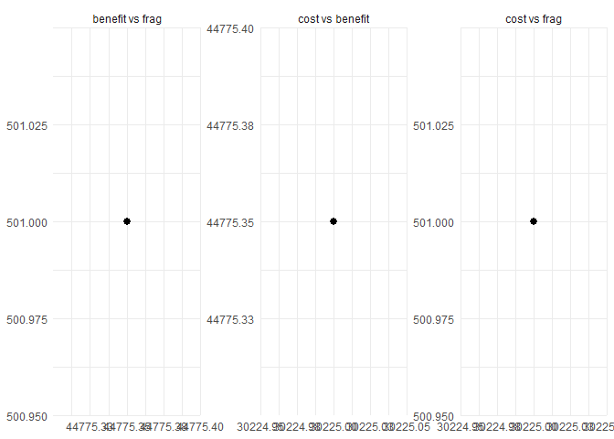
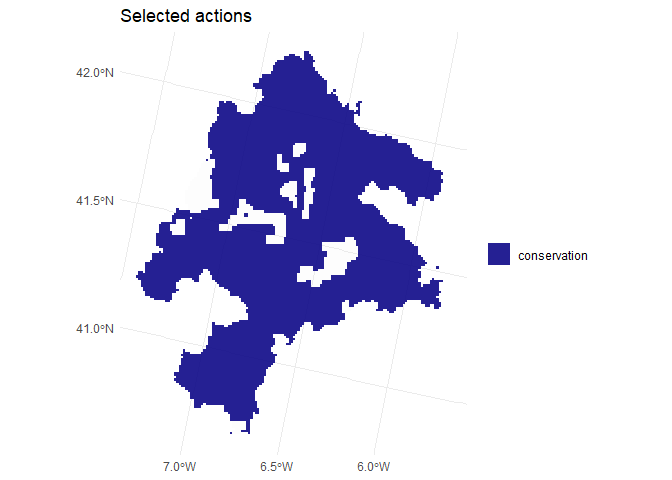

multiscape provides an exact optimisation framework for multi-objective spatial planning in problems where decisions are expressed as management actions applied across planning units.
The package allows users to:
- build planning problems from tabular or spatial inputs,
- define feasible management actions and their action-specific effects on features,
- add constraints, and spatial relations,
- register atomic objectives such as cost, benefit, profit, and fragmentation,
- and explore trade-offs using exact multi-objective optimisation methods such as weighted-sum, epsilon-constraint, and AUGMECON.
multiscape is designed for reproducible research workflows in conservation planning, restoration planning, and other spatial decision-support problems where actions, costs, ecological effects, and spatial structure interact.
Experimental status
multiscape is currently an experimental research package under active development.
The API may still evolve as the package moves toward a first stable CRAN release.
Installation
The current development version can be installed from GitHub:
if (!requireNamespace("remotes", quietly = TRUE)) {
install.packages("remotes")
}
remotes::install_github("josesalgr/multiscape")Core workflow
A typical multiscape workflow has five steps:
- Build a
Problemobject from planning units, features, and baseline feature amounts. - Add feasible actions and define how those actions affect features.
- Add constraints, and spatial relations if needed.
- Register one or more atomic objectives.
- Solve the problem in single-objective or multi-objective mode.
The example below illustrates this workflow using package data with polygon planning units stored as an sf object.
Worked example: spatial planning with actions and trade-offs
Load the package and example data
library(multiscape)
#>
#> S'està adjuntant el paquet: 'multiscape'
#> L'objecte següent està emmascarat per 'package:base':
#>
#> solve
data("sim_pu_sf", package = "multiscape")
data("sim_features", package = "multiscape")
data("sim_dist_features", package = "multiscape")The dataset sim_pu_sf contains planning-unit polygons and a cost column.
The tables sim_features and sim_dist_features define the feature catalogue and the baseline distribution of feature amounts across planning units.
Build the planning problem
p <- create_problem(
pu = sim_pu_sf,
features = sim_features,
dist_features = sim_dist_features,
cost = "cost"
)
#> Warning: The following pu's do not contain features: 8012 8033 8147 8263
print(p)
#> A multiscape object (<Problem>)
#> ├─data
#> │├─planning units: <tbl_df> (11109 total)
#> │├─costs: min: 1, max: 1
#> │└─features: 155 total ("ACCGENT", "ACCNISU", "ACRARUN", ...)
#> └─actions and effects
#> │├─actions: none
#> │├─feasible action pairs: none
#> │├─effect data: none
#> │└─profit data: none
#> └─spatial
#> │├─geometry: sf (11109 rows)
#> │├─coordinates: 11109 rows (x: 2868900..3007900, y: 2110700..2280700)
#> │└─relations: none
#> └─targets and constraints
#> │├─targets: none
#> │├─area constraints: none
#> │├─planning-unit locks: none
#> │└─action locks: none
#> └─model
#> │├─status: not built yet (will build in solve())
#> │├─objectives: none
#> │├─method: single-objective
#> │├─solver: not set (auto)
#> │└─checks: incomplete (no objective registered)
#> # ℹ Use `x$data` to inspect stored tables and model snapshots.At this stage, the problem contains:
- planning units,
- features,
- baseline feature amounts,
- and spatial geometry that can later be used for plotting and spatial relations.
Add management actions
We now define a simple action catalogue with two actions:
-
conservation, representing low-cost maintenance actions, -
restoration, representing more intensive interventions.
actions <- data.frame(
id = c("conservation", "restoration"),
name = c("Conservation", "Restoration")
)
p <- add_actions(
x = p,
actions = actions,
cost = c(conservation = 2, restoration = 6)
)
print(p)
#> A multiscape object (<Problem>)
#> ├─data
#> │├─planning units: <tbl_df> (11109 total)
#> │├─costs: min: 1, max: 1
#> │└─features: 155 total ("ACCGENT", "ACCNISU", "ACRARUN", ...)
#> └─actions and effects
#> │├─actions: 2 total ("Conservation", "Restoration")
#> │├─feasible action pairs: 22218 feasible rows
#> │├─action costs: min: 2, max: 6
#> │├─effect data: none
#> │└─profit data: none
#> └─spatial
#> │├─geometry: sf (11109 rows)
#> │├─coordinates: 11109 rows (x: 2868900..3007900, y: 2110700..2280700)
#> │└─relations: none
#> └─targets and constraints
#> │├─targets: none
#> │├─area constraints: none
#> │├─planning-unit locks: none
#> │└─action locks: none
#> └─model
#> │├─status: not built yet (will build in solve())
#> │├─objectives: none
#> │├─method: single-objective
#> │├─solver: not set (auto)
#> │└─checks: incomplete (no objective registered)
#> # ℹ Use `x$data` to inspect stored tables and model snapshots.This creates the action catalogue in p$data$actions and the feasible planning unit–action table in p$data$dist_actions.
Add action effects
Next, we define how actions affect features. In this example, we use a simple multiplier specification:
-
conservationprovides a small positive effect on all features, -
restorationprovides a larger positive effect.
effects_tbl <- expand.grid(
action = c("conservation", "restoration"),
feature = sim_features$name,
stringsAsFactors = FALSE
)
effects_tbl$multiplier <- c(
rep(0.05, nrow(sim_features)),
rep(0.20, nrow(sim_features))
)
p <- add_effects(
x = p,
effects = effects_tbl,
effect_type = "delta"
)Internally, effects are stored in canonical form with non-negative benefit and loss columns for each (pu, action, feature) triple.
Add a spatial relation
To represent spatial cohesion, we add a boundary-based spatial relation from the planning-unit polygons:
p <- add_spatial_distance(
x = p,
name = "boundary",
max_distance = 1000
)
print(p)
#> A multiscape object (<Problem>)
#> ├─data
#> │├─planning units: <tbl_df> (11109 total)
#> │├─costs: min: 1, max: 1
#> │└─features: 155 total ("ACCGENT", "ACCNISU", "ACRARUN", ...)
#> └─actions and effects
#> │├─actions: 2 total ("Conservation", "Restoration")
#> │├─feasible action pairs: 22218 feasible rows
#> │├─action costs: min: 2, max: 6
#> │├─effect data: 696042 rows
#> │├─effect mode: benefit only
#> │└─profit data: none
#> └─spatial
#> │├─geometry: sf (11109 rows)
#> │├─coordinates: 11109 rows (x: 2868900..3007900, y: 2110700..2280700)
#> │└─relations: boundary (21693 edges, w: 1..1)
#> └─targets and constraints
#> │├─targets: none
#> │├─area constraints: none
#> │├─planning-unit locks: none
#> │└─action locks: none
#> └─model
#> │├─status: not built yet (will build in solve())
#> │├─objectives: none
#> │├─method: single-objective
#> │├─solver: not set (auto)
#> │└─checks: incomplete (no objective registered)
#> # ℹ Use `x$data` to inspect stored tables and model snapshots.This stores a spatial relation that can later be used by fragmentation objectives.
Add a target
We now add a relative target requiring each feature to reach at least 20% of its baseline total contribution:
p <- add_constraint_targets_relative(
x = p,
targets = 0.03
)
print(p)
#> A multiscape object (<Problem>)
#> ├─data
#> │├─planning units: <tbl_df> (11109 total)
#> │├─costs: min: 1, max: 1
#> │└─features: 155 total ("ACCGENT", "ACCNISU", "ACRARUN", ...)
#> └─actions and effects
#> │├─actions: 2 total ("Conservation", "Restoration")
#> │├─feasible action pairs: 22218 feasible rows
#> │├─action costs: min: 2, max: 6
#> │├─effect data: 696042 rows
#> │├─effect mode: benefit only
#> │└─profit data: none
#> └─spatial
#> │├─geometry: sf (11109 rows)
#> │├─coordinates: 11109 rows (x: 2868900..3007900, y: 2110700..2280700)
#> │└─relations: boundary (21693 edges, w: 1..1)
#> └─targets and constraints
#> │├─targets: 155 rows
#> │├─target preview: "ACCGENT" >= 108.2, "ACCNISU" >= 120.9, "ACRARUN" >= 15.33
#> │├─area constraints: none
#> │├─planning-unit locks: none
#> │└─action locks: none
#> └─model
#> │├─status: not built yet (will build in solve())
#> │├─objectives: none
#> │├─method: single-objective
#> │├─solver: not set (auto)
#> │└─checks: incomplete (no objective registered)
#> # ℹ Use `x$data` to inspect stored tables and model snapshots.Register atomic objectives
A key idea in multiscape is that objectives are registered as atomic objectives under user-defined aliases. These aliases can later be combined in multi-objective methods.
Here we register three objectives:
- minimise total cost,
- maximise ecological benefit,
- minimise fragmentation.
p <- p |>
add_objective_min_cost(alias = "cost") |>
add_objective_max_benefit(alias = "benefit") |>
add_objective_min_fragmentation(
alias = "frag",
relation_name = "boundary"
)
print(p)
#> A multiscape object (<Problem>)
#> ├─data
#> │├─planning units: <tbl_df> (11109 total)
#> │├─costs: min: 1, max: 1
#> │└─features: 155 total ("ACCGENT", "ACCNISU", "ACRARUN", ...)
#> └─actions and effects
#> │├─actions: 2 total ("Conservation", "Restoration")
#> │├─feasible action pairs: 22218 feasible rows
#> │├─action costs: min: 2, max: 6
#> │├─effect data: 696042 rows
#> │├─effect mode: benefit only
#> │└─profit data: none
#> └─spatial
#> │├─geometry: sf (11109 rows)
#> │├─coordinates: 11109 rows (x: 2868900..3007900, y: 2110700..2280700)
#> │└─relations: boundary (21693 edges, w: 1..1)
#> └─targets and constraints
#> │├─targets: 155 rows
#> │├─target preview: "ACCGENT" >= 108.2, "ACCNISU" >= 120.9, "ACRARUN" >= 15.33
#> │├─area constraints: none
#> │├─planning-unit locks: none
#> │└─action locks: none
#> └─model
#> │├─status: not built yet (will build in solve())
#> │├─objectives: 3 registered (benefit, cost, frag)
#> │├─method: not set
#> │├─solver: not set (auto)
#> │└─checks: incomplete (multiple objectives registered but no MO method
#> selected)
#> # ℹ Use `x$data` to inspect stored tables and model snapshots.Configure a multi-objective method
There are several ways to explore trade-offs in multiscape. A simple option is to use a weighted-sum formulation.
p_mo <- set_method_weighted(
x = p,
aliases = c("cost", "benefit", "frag"),
weights = c(1, 1, 1),
normalize_weights = TRUE
)This stores the multi-objective configuration in the problem object. It does not solve the problem yet.
Configure the solver
Before solving, we store solver settings in the problem object:
p_mo <- set_solver_cbc(
x = p_mo,
time_limit = 60,
gap_limit = 0.01,
verbose = TRUE
)You can also use convenience wrappers such as set_solver_gurobi(), set_solver_cplex(), set_solver_cbc(), or set_solver_symphony().
Solve the problem
res <- solve(p_mo)Depending on the selected method, solve() returns either:
- a
Solutionobject for a single-objective solve, or - a
SolutionSetobject for a multi-objective workflow.
Inspect results
For solved problems, multiscape provides helper functions to extract user-facing summaries:
solution_actions <- get_actions(res)
head(solution_actions)
#> pu action cost status selected run_id
#> 1 1 conservation 2 0 1 1
#> 11110 1 restoration 6 0 0 1
#> 2 2 conservation 2 0 1 1
#> 11111 2 restoration 6 0 0 1
#> 3 3 conservation 2 0 1 1
#> 11112 3 restoration 6 0 0 1When the result is a multi-objective solution set, you can also inspect trade-offs across runs:
plot_tradeoff(res)
and, when geometry is available, spatial outputs can be visualised directly:
plot_spatial(res, what = "actions")
Why this example matters
This example illustrates the main modelling logic of multiscape.
The problem is not only about selecting planning units. Instead, it is about deciding which action should be feasible and selected in each planning unit, while accounting for:
- implementation cost,
- action-specific ecological effects,
- target achievement,
- and spatial cohesion.
This makes it possible to study realistic trade-offs such as:
- lower cost versus higher ecological benefit,
- greater benefit versus more compact spatial patterns,
- or more cohesive solutions versus more flexible action allocation.
Learn more
To explore the package further, see:
- the function reference at the package website,
- the documentation of
create_problem(),add_actions(),add_effects(), andsolve(), - and the multi-objective methods
set_method_weighted(),set_method_epsilon_constraint(), andset_method_augmecon().
If you find a bug or want to suggest an improvement, please open an issue at: